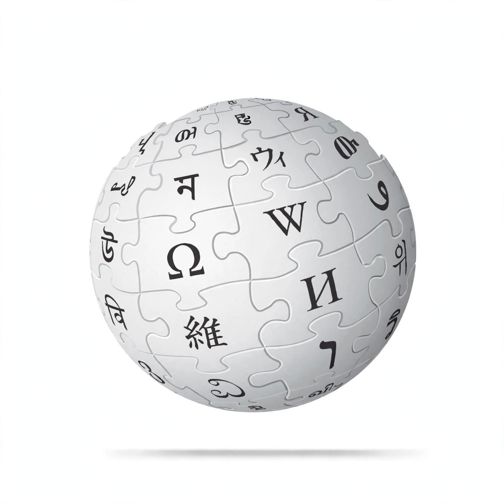

| Type | Online encyclopedia |
|---|---|
| Launched | 15 January 2001 |
| Founders | Jimmy Wales and Larry Sanger |
| Owner | Wikimedia Foundation |
| Content licence | Creative Commons Attribution-ShareAlike (CC BY-SA) |
| Registration | Optional |
| Languages | More than 300 editions |

Wikipedia is a free-content online encyclopedia written and maintained by a community of volunteers, known as Wikipedians, through open collaboration and the wiki software MediaWiki. Founded by Jimmy Wales and Larry Sanger on 15 January 2001, it has grown into the largest and most-read reference work in history.
Anyone with internet access can write and make changes to most articles, without registering an account. Content must be written from a neutral point of view, be verifiable in published reliable sources, and contain no original research — the encyclopedia's three core content policies. Editors discuss changes on talk pages, and a system of administrators and bots helps counter vandalism.
The English Wikipedia alone contains more than six million articles, and editions exist in over 300 languages. Collectively the sites rank among the most visited on the web. Articles range from major historical topics such as Nazi Germany and the First World War to specialised subjects like the glacial period and molecular motors such as myosin.
Wikipedia is operated by the non-profit Wikimedia Foundation and funded mainly by small donations from readers; it carries no advertising. All text is available under a free licence, allowing anyone to copy, modify and redistribute it with attribution.
The project has been both praised for its breadth and democratisation of knowledge and criticised for systemic bias, uneven quality and vulnerability to manipulation. Comparative studies, including a widely cited 2005 review in Nature, have found its accuracy on scientific topics to be broadly comparable to traditional encyclopedias.
This page is a general introduction; the project's own policies and guidelines are documented throughout the Wikipedia namespace.